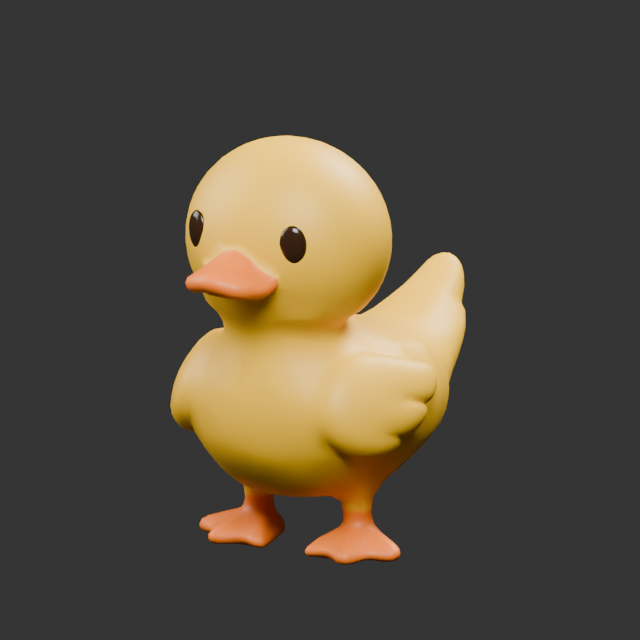
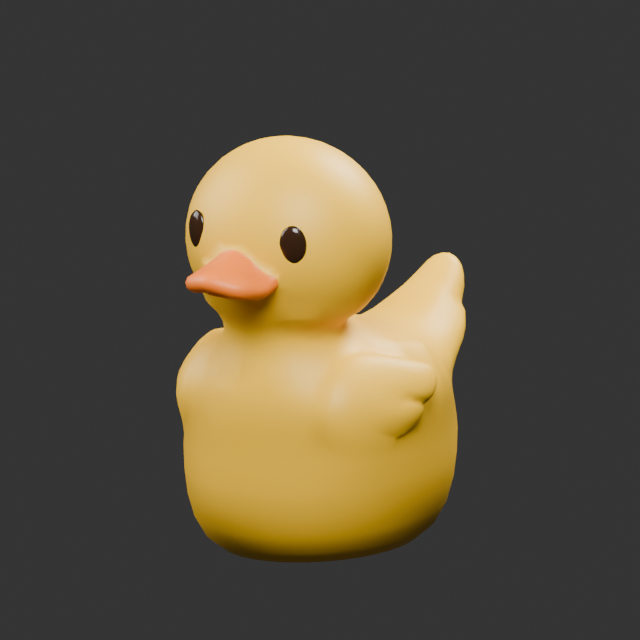
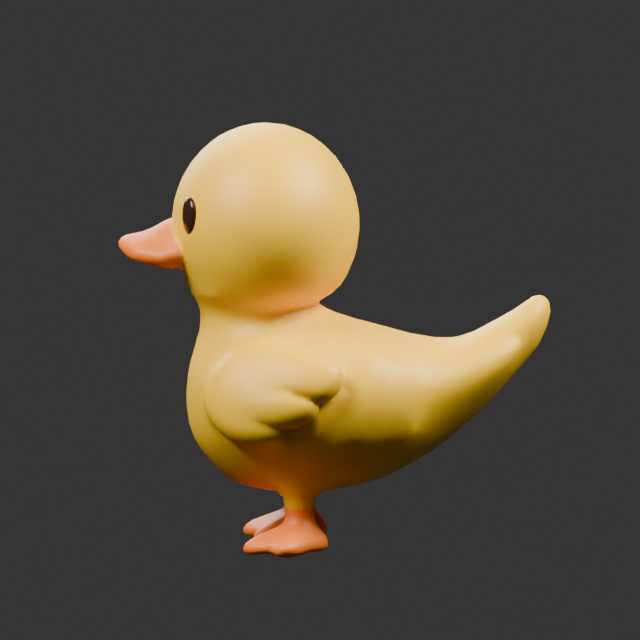
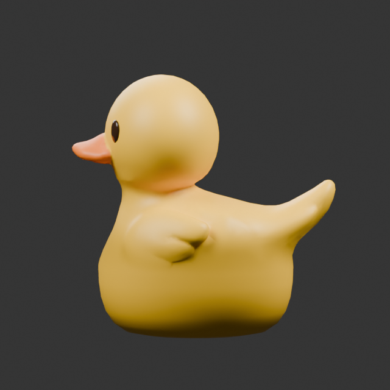
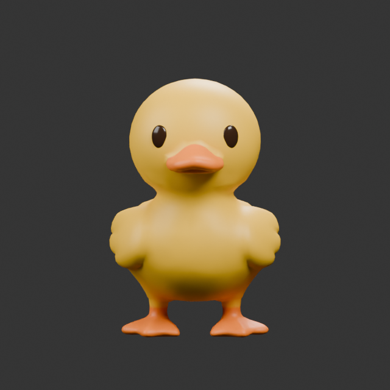
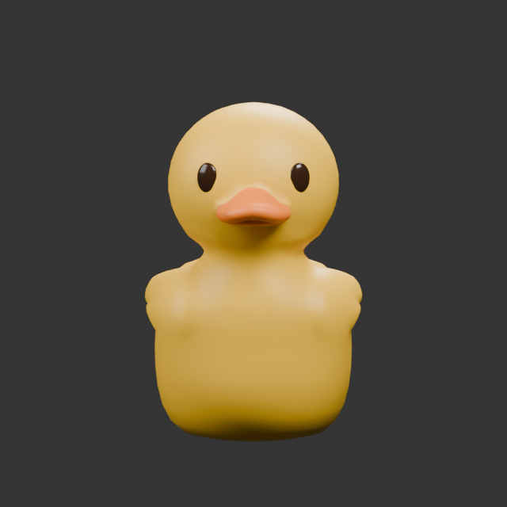
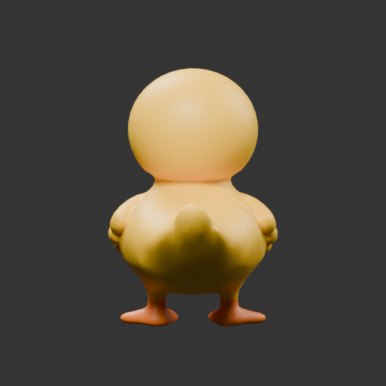
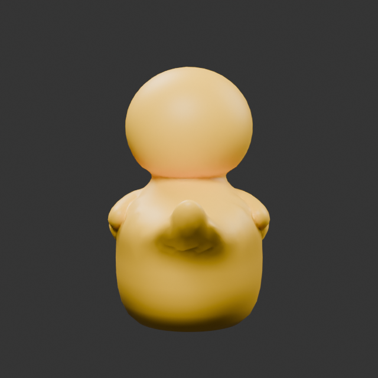
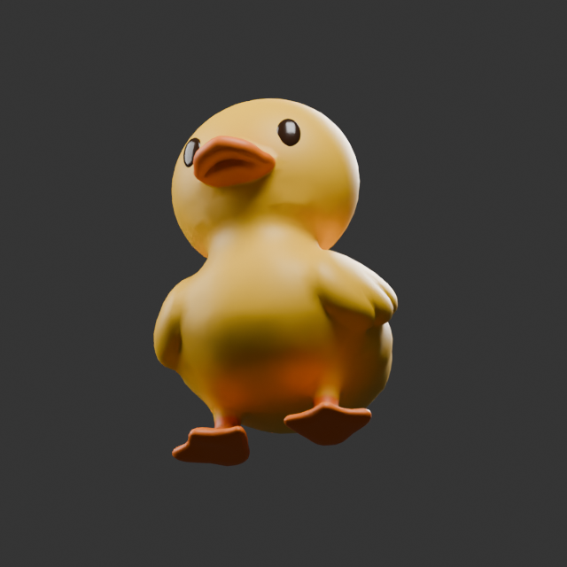
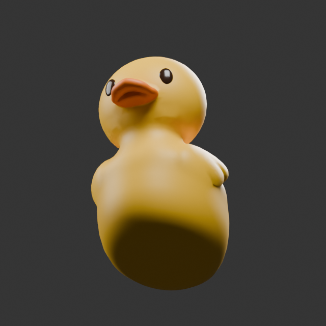

ユーザー指定の「足のないラバーダック」へ修正。足と脚を取り除き、胴体から続く丸い黄色の底に整えました。頭・目・くちばしと帽子の接続位置を維持しています。










無彩色で底面の形状を確認 · 寸法・保持範囲の記録 · 修正方法と確認範囲
Generated with Meshy 6 Lite / CC BY 4.0。Blender による改変：Sento Duck Explorer project。出典と改変表示。参照画像と元の Meshy 出力は履歴として保持しています。